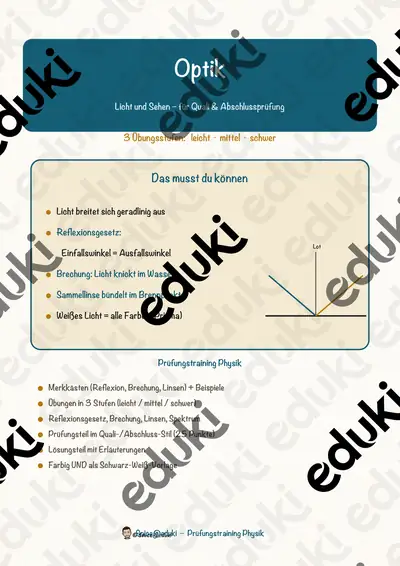

Licht und Optik: Arbeitsblätter für Klasse 5–9 (Physik)
Licht und Optik sind zentrale Themen der Physik. Schatten, Spiegelung, Linsen und Farben werden experimentell erforscht.
Im Unterricht begegnen den Lernenden zuerst Lichtquellen und Schatten. Wer weitergeht, behandelt Reflexion, Lichtbrechung, Linsen sowie Farben.
Je nach Bundesland variiert die genaue Einordnung; üblich ist das Fach Physik in der Sekundarstufe I (Klasse 5–9). Die Schülerinnen und Schüler erklären Schatten und Spiegelbild und beschreiben Linsen.
Wer Licht und Optik auf mehrere Stunden verteilt, startet mit Lichtquellen, übt an Reflexion und schließt mit Linsen ab. Alle Blätter sind kopierfertig und enthalten Lösungen für die schnelle Kontrolle. Zur Differenzierung eignen sich die Lesespurgeschichten mit ihren drei Niveaustufen.
Die Auswahl zum Thema umfasst derzeit 14 Titel, zum Beispiel Die Lichterkette, Farben selbst herstellen und Licht und Schatten. Dazu zählen 6 Lesespurgeschichten, 1 Prüfungstraining und 6 Lückentexte mit Hörverstehen für Klasse 5–9. Taschenlampen, Spiegel und Lupen reichen für ein Stationenlernen mit vielen Aha-Effekten.
Das gehört zum Thema
Passende Arbeitsblätter und Materialpakete

Die Lichterkette – Reihenschaltung und Parallelschaltung – Lesespurgeschichte mit Rätselaufgaben (Klasse 8)

Farben selbst herstellen – vom Pigment zur Tube – Lesespurgeschichte mit Rätselaufgaben (Klasse 7)

Licht und Schatten – Körper plastisch zeichnen – Lesespurgeschichte mit Rätselaufgaben (Klasse 8)

Das Spiegelkabinett – Lesespurgeschichte mit Rätselaufgaben (Klasse 5)

Der Regenbogen – Lesespurgeschichte mit Rätselaufgaben (Klasse 6)

Das Licht und die Farben – Lesespurgeschichte mit Rätselaufgaben (Klasse 7)

Optik – Licht und Sehen – Prüfungstraining Physik (Klasse 8)

Regenbogen Lückentext mit Wortspeicher Hörverstehen und Suchsel

Optik Lückentext mit Wortspeicher Hörverstehen und Suchsel

Lupe Lückentext mit Wortspeicher Hörverstehen und Suchsel

Linse Lückentext mit Wortspeicher Hörverstehen und Suchsel

Licht Lückentext mit Wortspeicher Hörverstehen und Suchsel

Farbe Lückentext mit Wortspeicher Hörverstehen und Suchsel

Farbe-an-sich-Kontrast - Kunst Farbkontraste #edukiknaller2021
Häufige Fragen
Für welche Klassenstufe passen die Arbeitsblätter zu Licht und Optik?
Passend sind Klasse 5–9. Von den 14 Titeln wenden sich die meisten an Klasse 5, einige lassen sich differenzierend auch in benachbarten Stufen nutzen.
Welche Inhalte decken die Materialien zu Licht und Optik ab?
Behandelt werden unter anderem Lichtquellen, Schatten, Reflexion und Lichtbrechung. Welche Aspekte in Ihrer Klasse Vorrang haben, richtet sich nach dem Lehrplan Ihres Bundeslandes.
Wie setze ich Licht und Optik im Unterricht ein?
Taschenlampen, Spiegel und Lupen reichen für ein Stationenlernen mit vielen Aha-Effekten. Danach genügt meist ein Material als Einstieg und eines zum Üben.
Mehr Material nach Fach und Klasse
- Alle Materialien Physik
- Arbeitsblätter Physik Klasse 5
- Arbeitsblätter Physik Klasse 6
- Arbeitsblätter Physik Klasse 7
- Arbeitsblätter Physik Klasse 8
- Arbeitsblätter Physik Klasse 9
- Unterrichtsmaterial Klasse 5
- Unterrichtsmaterial Klasse 6
- Unterrichtsmaterial Klasse 7
- Unterrichtsmaterial Klasse 8
- Unterrichtsmaterial Klasse 9
Verwandte Lehrplanthemen
- Kräfte und Bewegung (Physik, Klasse 6–10)
- Schall und Akustik (Physik, Klasse 5–9)
- Wärme und Energieformen (Physik, Klasse 5–10)
- Strom und Stromkreis (Physik, Klasse 3–8)
- Wetter und Wettererscheinungen (Sachunterricht, Klasse 2–7)